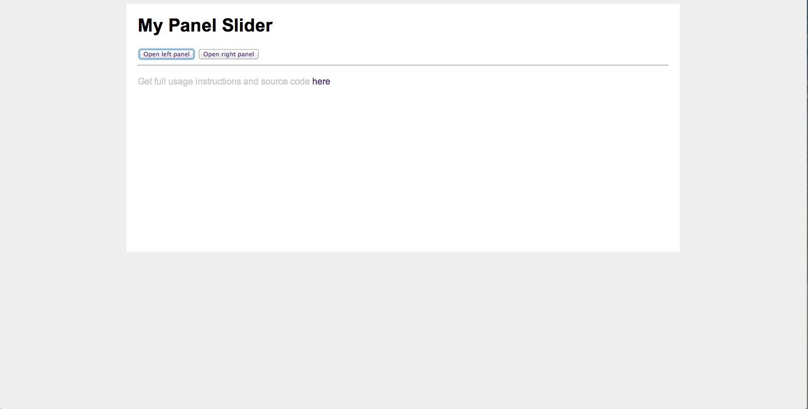
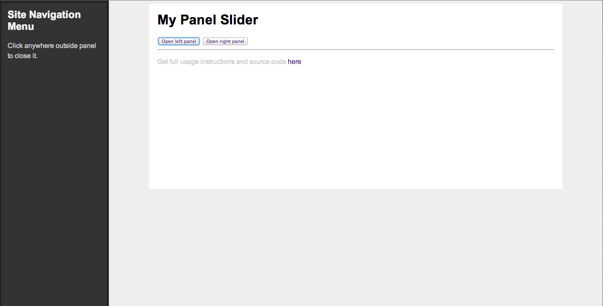
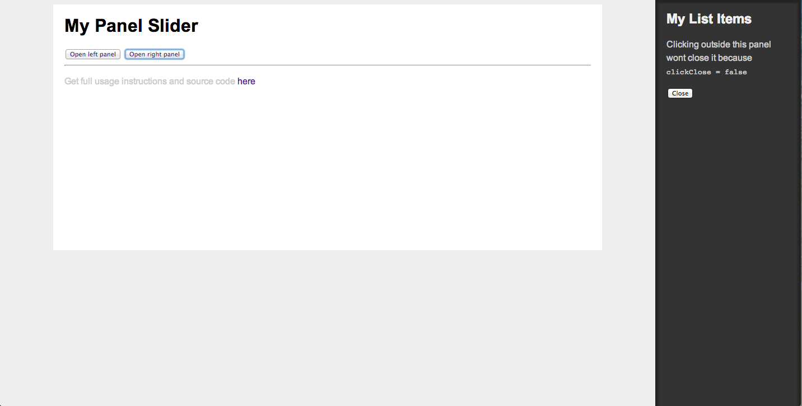

Created by Kareem K. Beazer
The purpose of this presentation is to inform users on what the jQuery Panel Slider is, and how you can incorperate the plugin in your projects.
The jQuery Panel Slider plugin lets you easily open slide panels from the left or right which contain either the default content, or content loaded using Ajax.
A simple example of the Panel Slider plugin in action.
Click down to continue.
This display shows the left side of the Panel Slider.
Click down to continue.
This display shows the right side of the Panel Slider.
Click down to continue.
Click down to continue.
The jQuery Panel slider comes in very handy if you are in need of a side bar, or even just an alternative menu that users can interact with. It's very easy to use, and the implementaion process takes minutes once you familiarize yourself with the documentations.